Introduction to GIS with QGIS
The background to GIS and an explanation of what it is will be covered in the lecture segment at the beginning of the class, and the presentation and any other supporting materials will be available in Minerva. The lecture segment should help you to understand why you are doing these exercises. If you still aren’t sure, please ask Clare.
Learning outcomes
When you have completed this section of the workbook you should be able to
- demonstrate how to open a map project in QGIS
- select appropriate tools to navigate in a map document
- use layers to organise and display information on a map
Introduction to the exercises
The exercises in this workbook will build on each other so that by the end of this part of the module you will have used data from a variety of sources to create a map layout covering an area of North Wales near the village of Llanbedr. You will be able to include maps showing the gravity anomaly for the area and the geology. You will also include some interpretation of your maps.
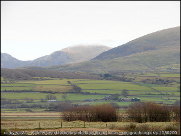
In this first section I have provided the data for you but as the exercises progress you will find out more about how to find your own data.
Obtaining the data for this chapter
You can download the data for this chapter from Minerva.
- Go to this module in Minerva, then to
Learning Resources > GIS information > Week 7 - Download
NorthWalesDataQ.zipfrom this folder by right-clicking and saving to your local disk. - Create a folder called
gisin your file system. You’ll need a total of about 170 MB of free space to complete the following exercises. - Move the downloaded data into your
gisfolder Unzipthe file in this location
Warning
Never try to use the contents of a zipped file in QGIS without extracting it first - it won’t work. If you are looking for a file in QGIS and can’t find it, always check via My Computer that the file isn’t inside a zip or 7zip archive.
The contents of the zip file should look something like the following image when they are unzipped, with two further folders, a OSM.gpkg file and a NorthWales.qgz file.
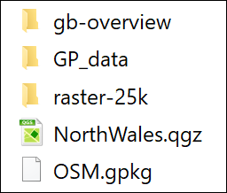
Opening the map project in QGIS
- The simplest way is to double-click on the
NorthWales.qgzfile inFile Explorer. - Alternatively first open QGIS by searching for it in the Start Menu box
- Then
Project > Open - navigate to where you put the project files and select
NorthWales.qgz - click
Open
- Then
The image below shows how the project will look in QGIS when you first open it. Note that yours may look different to mine as buttons and toolbars can vary in location. If you are using a version higher than 3.10.11 you may also get a notice at the top warning you about that. Just ignore it or close it, this won’t be a problem for you.
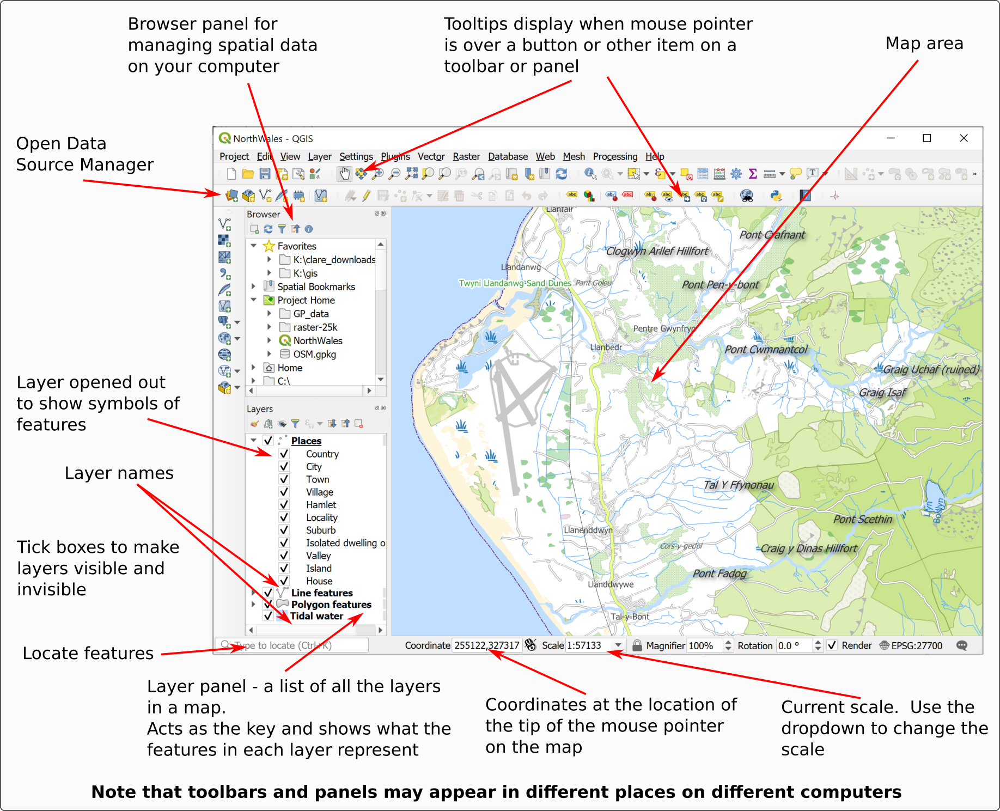
Navigation in QGIS
Once you have data on a map in QGIS there are various tools which will allow you to zoom in and out and move around the map view.
Zoom to Layer
A lot of the work that you do in GIS will be layer-based. Each file that you add is a layer and will appear in the Layers panel on the left.
Zoom to Layer is an extremely useful command to know and you’ll probably find yourself using it a lot.
- Right-click on the
Placeslayer (sub-heading) in the Layers panel - Select
Zoom to Layer
Your map should zoom out so that you can see a bigger area of the Welsh coast. You’re zoomed well out so this particular map looks a bit messy and may take a bit of time to load, but once it does you should be able to see Harlech and Dolgellau.
The Map Navigation Toolbar
Tools for zooming in and out and for moving around the map are available on the Map Navigation Toolbar.
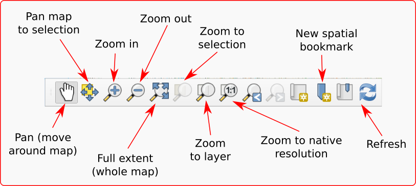
If the toolbar isn’t already visible in QGIS go to
View > Toolbars- and tick the box next to
Map Navigation Toolbar
Trying out the navigation
Try out the following tools in turn on your map so that you are aware of what they do.
Pan- use the hand cursor to “grab” the map and move it around
Zoom in- click on the button, then on the map. You can also use the middle mouse wheel to zoom in and out of your map.
Zoom out- click on the button, then on the map. You can also use the middle mouse wheel to zoom in and out of your map.
Full extentto see the whole map (again be patient while it loads) - then use Zoom to Layer to get back to the extent of thePlaceslayer.
Working with map layers in QGIS
Layers are an essential part of any GIS. Each layer is a reference to a particular data source.
In this project the layers so far include:
- Places
- Line features
- Polygon features
- Tidal water
The Layers panel on the left hand side of the map window shows the layers that are in your map and how their features look and allows you to control their visibility.
Viewing contents of layers
If you have added vector data, which all of the layers so far are, you’ll also be able to refer to the layers panel as a key to your symbols. This is particularly useful if a layer has multiple symbols.
- Click on the little arrow next to the
Polygon featureslayer - assuming it started “closed”, you should now be able to see lots of different symbols and an explanation of what they show. - Click on the little arrow again to fold the list away and repeat this for the
PlacesandLine featureslayers.
Making layers visible and invisible
There will be times when you don’t want all of the layers to be visible on your map, but you won’t necessarily want to actually remove them completely. It is simple to make layers visible and invisible.
- Click in the little box next to one of the layers - the tick will disappear and so will that layer in your map
- To make the layer visible click in the little box again.
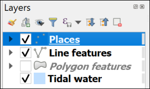
You’ll notice in layers with multiple symbols that you can turn each of those off individually too. For example,
- Fold down the Places layer in the contents
- then untick next to
Town
The names for Harlech and Dolgellau should disappear, but if you zoom in you will still be able to see the other place names.
- Make sure you tick back in the
Townbox.
Locating features
The layers in your map at the moment are vector feature classes and are searchable (you’ll find out more about the data types raster and vector later).
- Click in the
Type to locatebox at the lower left, or useCtrl+Kon the keyboard - Have a look at the list of options that pops up - it looks a bit confusing to start with but is simple to use.
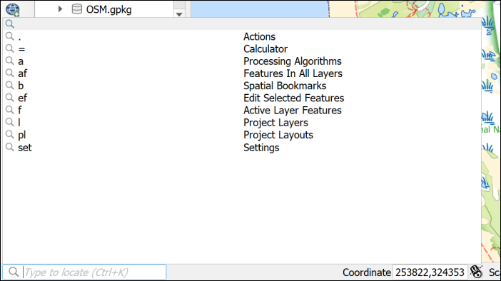
- Type the following in the box -
af Harlech. Theafshows that you want to search for Features in all layers - As you type a list of options will appear - double-click on one of the options for
Harlech Castle(it doesn’t matter which)
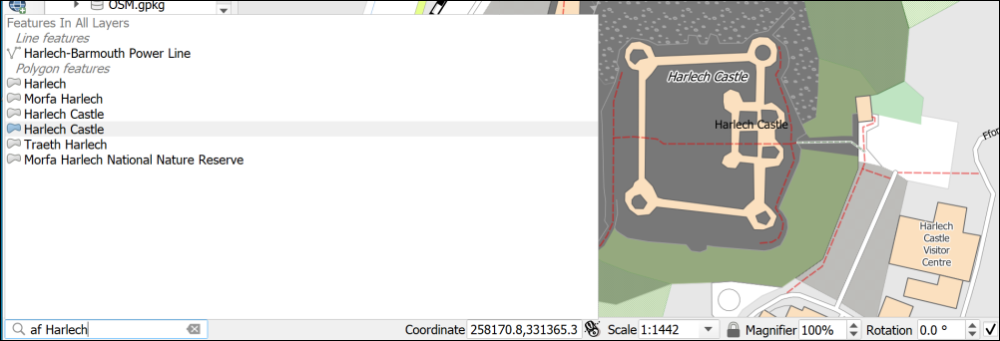
This can be a useful way of finding things on your map if you are using vector layers.
Adding layers to QGIS with the Browser
Now have a look at the Browser panel
If you can’t see the Browser which shows you where files are on your file system, go to:
View > Panelsand tick in the box next toBrowser
Using the Browser you should be able to navigate to the folder in which you saved your downloads.
If you have saved your data in the same folder as the map you should be able to find everything under the Project Home heading, otherwise you’ll have to browse through your file system.
- Browse to your downloaded files and look for a folder called
gb-overview - have a look in the folder and find a file called
GBOverview.tif - drag and drop that file to the
Layers panel - Right-click on the GBOverview layer in the Layers panel and
Zoom to layer
You should now be able to see a map of Great Britain in the main panel.
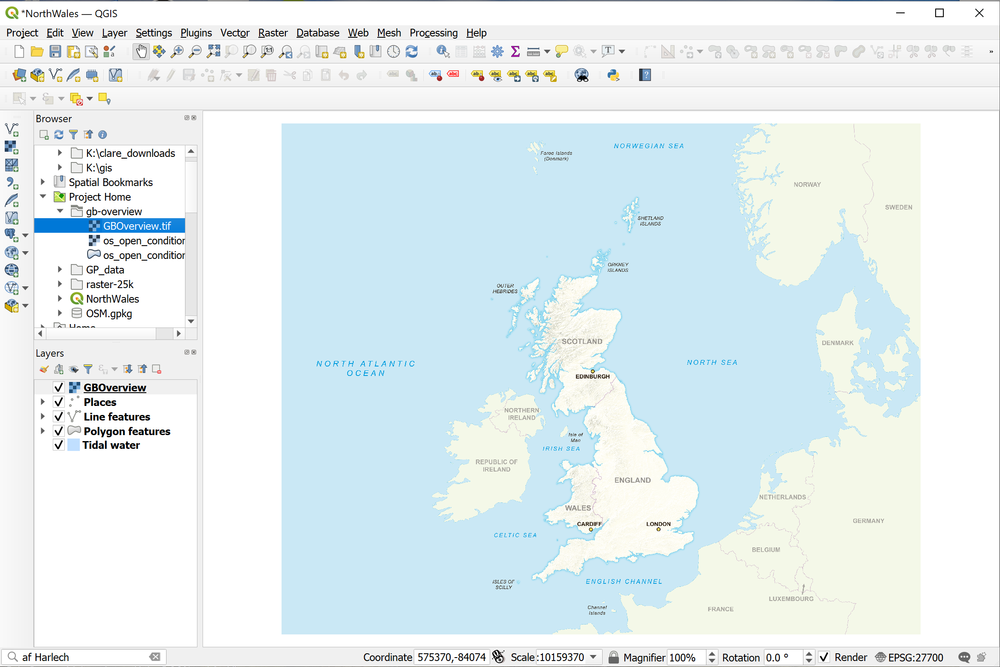
This is probably the easiest way to add data to your maps.
Adding raster data to a map with the Data Source Manager
As with so many tasks in GIS there is more than one way to add data to QGIS.
- On the menu bar go to
Layer > Data Source Manager - Click on
Rasteron the left - then click on the button with three dots next to the
Sourcebox - Navigate to the
raster-25kfolder and selectraster-25k_3706482.tif - Click on
Open - Then click on
Add, and then onClose
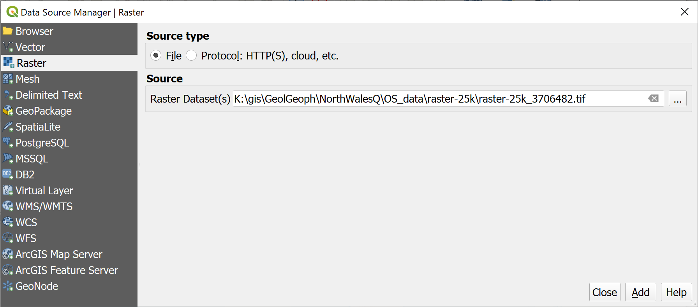
The new layer will be added to your Layers panel, but you probably won’t be able to see it on your map as it only covers a small area.
- Right-click on the
raster-25klayer in the Layers panel andZoom to Layerto be able to see the new map.
It won’t look great at this zoom level, but you can use the Zoom in button, or the middle mouse button, to see it more clearly.
These two new layers are raster data types. Again, you’ll find out more about these later.
Adding vector data to a map
The vector files on this map are all stored in a Geopackage called OSM.gpkg.
This is a form of database which stores and retrieves spatial data efficiently. If you look at this in File Explorer you’ll note that it looks like a single file. If you look at it in the Browser in QGIS you’ll see there is a little arrow next to it - the advantage of using the browser is that it is specifically designed to work with spatial data.
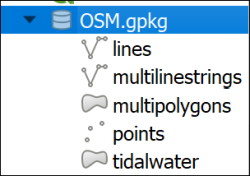
- Drop down the little arrow next to
OSM.gpkg - You should be able to see the layers that are stored in the geopackage - as in the image above
- Select the
multilinestringslayer in the Browser and drag and drop it into the Layers panel
You may need to Zoom to layer to see what you have just added. It should be a few lines in a random colour.
You can also add vector layers via the Data Source Manager
- Go to
Layer > Data Source Manager - Click on
Vectoron the left - then click on the button with three dots next to the
Sourcebox - Navigate to the
OSM.gpkgfile and select it - Click on
Open(If you’re using a newer version of QGIS you’ll also need to click onAdd) - You’ll get a choice of vector layers to add - select the
pointslayer - Then click on
OK, and then onClose
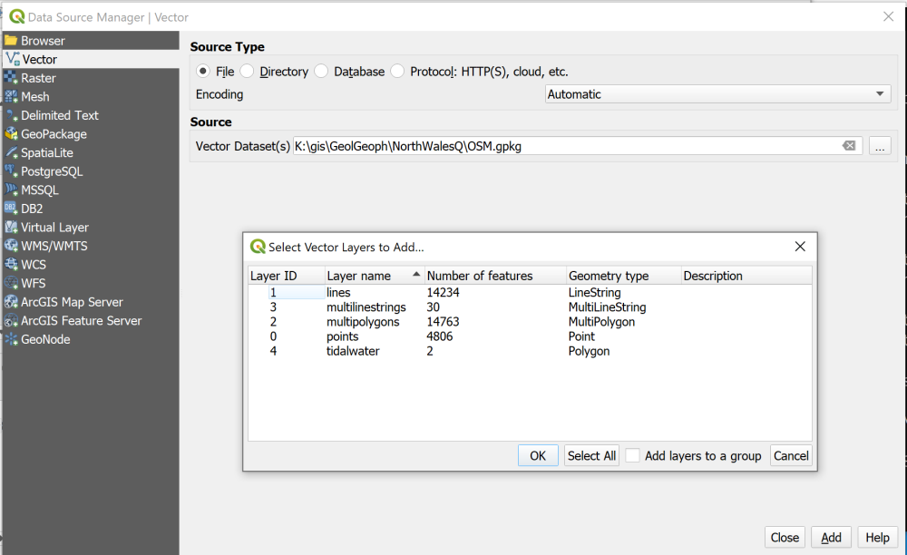
The new layer will be added to your Layers panel and you should see a lot of randomly coloured point symbols on your map.
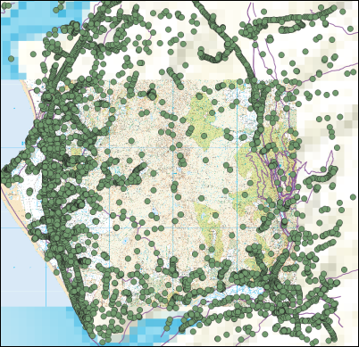
Removing layers
Your map is looking rather a mess now, so let’s clear it up a bit.
You won’t need the GBOverview, points and multilinestrings layers for the rest of this exercise so they can be removed.
Note that removing layers from your map does just that. You are not deleting the data from your disk, they still exist, but you are removing the link between the map and your data.
- Right-click on the
pointslayer (it may appear asOSM points) Remove layer...- You’ll be asked to confirm that you want to remove the layer, click on
OK - Repeat the process with the
multilinestringsandGBOverviewlayers. The process is identical for raster and vector layers.
Ordering the layers in the Layers panel
The order of the layers in the Layers panel affects how they appear on the map. Layers at the top of the list appear on top of the layers lower down.
At the moment you probably have the raster-25 layer above the other layers, so you can’t see them at the moment - though the labels still appear.
- Drag and drop the
raster-25klayer from the top of the list in the Layers panel to the bottom.
Again, your map will look rather a mess. Just make the following layers invisible for now.
- Places
- Line features
- Polygon features
- Tidal water
You will be working with this map for the rest of the course so go to the correct area by using Type to locate to find Llanbedr Airfield.
Saving your map
Save your map projects at regular intervals. You will be doing a lot of work on them and can lose a lot of time if you have to do your work again because the program has crashed.
Project > Saveor alternativelyCtrl + S(Windows)- If this is the first time you’ve saved it, make sure you remember where you have saved it to and give the file a name which will help you remember what it is. It is a good idea to save all of your files to the same
gisfolder and make sub folders for each individual project.
It is also a good idea to keep back up copies of your project and of the data files. Particularly once you start editing, problems can corrupt the whole file, so make a copy of your gis folder on a separate disk/drive/usb stick each time you finish a session working on them.
Checking and setting the coordinate system
The coordinate system is an important property which tells QGIS where data is located on the surface of the Earth and what measurement system is used for your datasets. It is important to have this set correctly or the layers in your map will not display correctly.
If you are working in Great Britain then the coordinate system is most likely to be British National Grid, though you may also have data in the unprojected WGS 1984. For this project we will be working in British National Grid.
QGIS will set the coordinate system of the map to that of the first data layer that is added. In this case it was the Places layer.
Check whether the coordinate system is set correctly as follows:
- Go to
Project > Propertiesand click on theCRSheading to the left
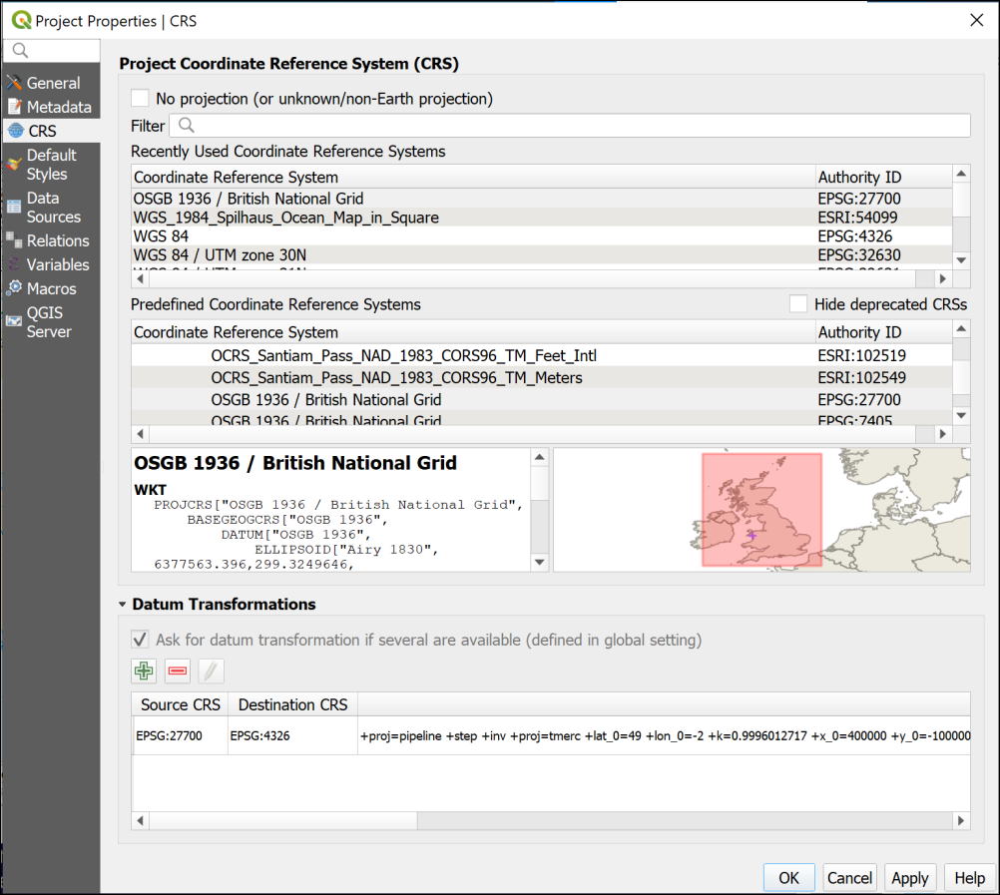
This rather complex-looking dialog controls the CRS or Coordinate Reference System for the whole project.
Look at the box to the left of the map - this shows that the CRS is currently set to British National Grid. The map on the right confirms that this CRS covers the correct area.
It is possible to use the Filter box at the top to search for other coordinate systems, though this isn’t necessary for this project.
- Click
OKto close the project properties.
If you look at the bottom right of the map window you should also see that the CRS is shown there, but this time only as a short numerical code - EPSG:27700.
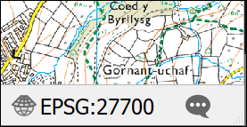
If you click on this you will be taken to the CRS tab of the project properties.
The final map for this chapter
You should finish this chapter with a map of the Llanbedr Airfield on the Welsh coast. Your map and the rest of the project should look something like the image below, though your map may cover a slightly different area. It isn’t a problem if it does.
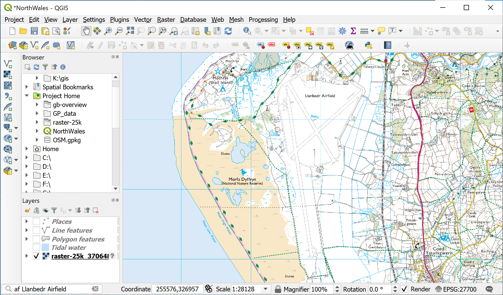
If you want me to give you feedback on this map, or on any stage of the process, please upload a screenshot to your GIS Portfolio - you’ll be given instructions on how to get access to this in the class. If you upload anything please email me to let me know that you have done so.
Don’t forget to save and backup this project. You’ll be using it for the rest of this course so make sure that you have it with you next week.
Further information and suggested reading
Many of the books in the reading list3 have a general introduction to GIS which explain what it is and how it is used. Suggestions include the following:
- Chapter 1, What is GIS? in Heywood, I., Cornelius, S. and Carver, S. (2011), pp. 2-30
- Chapter 1, Systems, Science and Study in Longley, P.A. et al. (2015), pp. 3-37
What is GIS? and some example applications
- ESRI UK (who publish proprietry GIS software ArcGIS) have a web page which includes an Overview of GIS and a GIS Showcase which includes examples of how GIS can be used.
- The webpage GIS for Science gives a lot more ideas for how GIS can be used by scientists.
-
7-zip is also open-source so if you want to install a copy on your own Windows computer you can - just download it from the 7-zip webpage. ↩
-
Note that these instructions are for Windows, if you are on a Mac or Linux computer you will still need to unzip the files, but I don’t have access to one of these to write the instructions. ↩
-
The reading list is available in Minerva and from the library (search for the number of this module). ↩